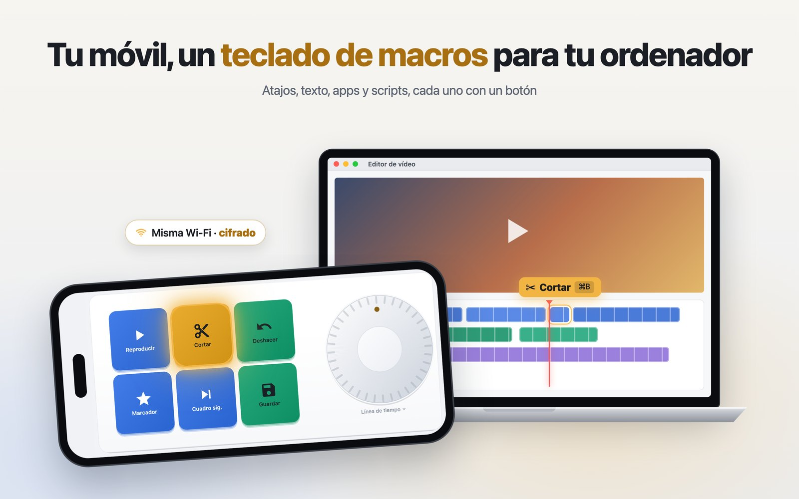
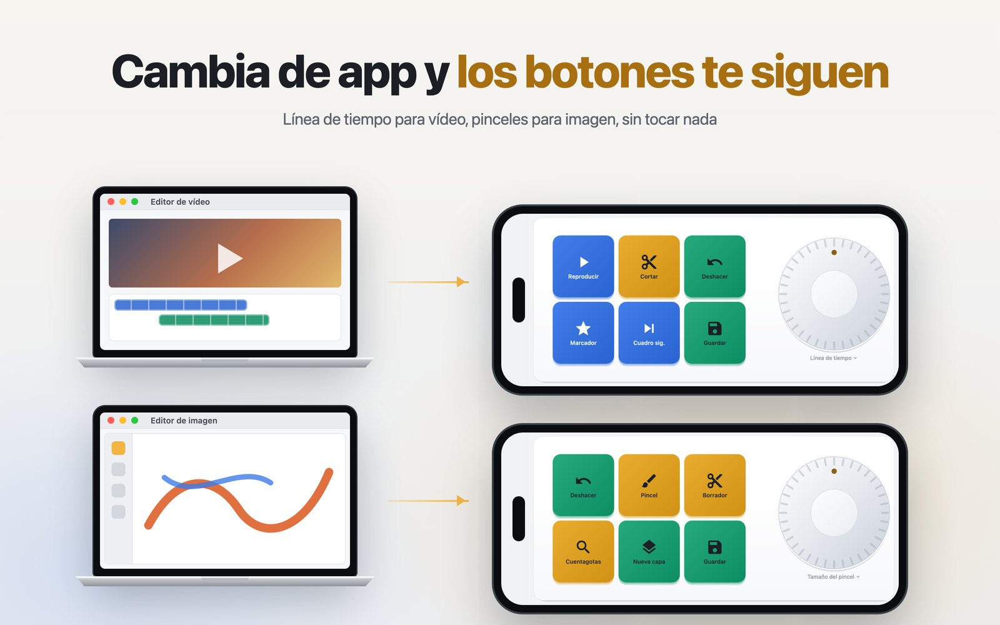
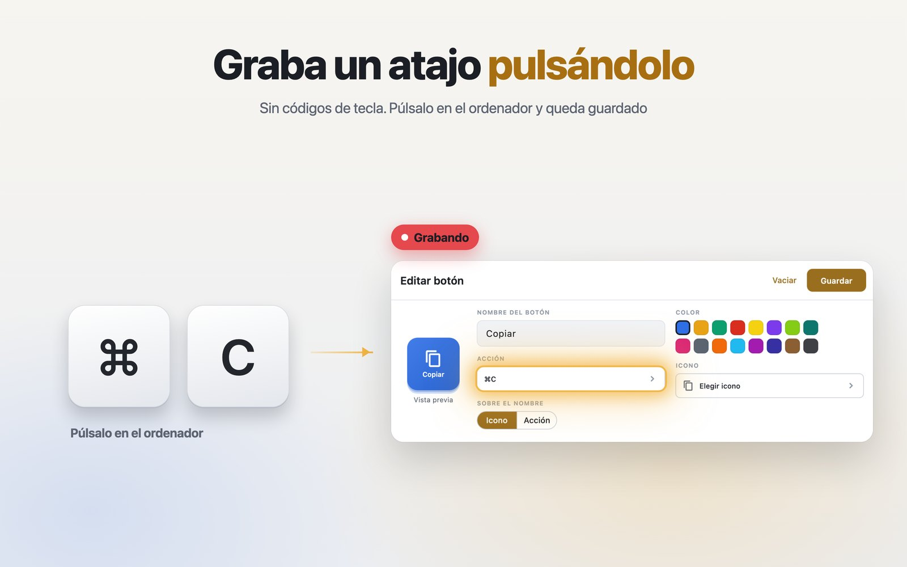
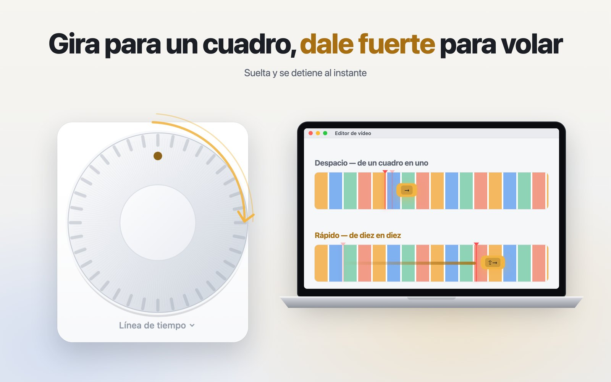
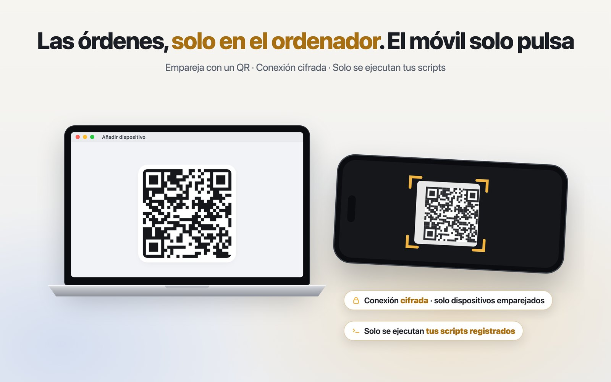

Sigue a la app que tiene delante
Vincule un panel a Final Cut, Photoshop, Safari o VS Code. Cuando esa app pasa al frente, el teléfono cambia a su panel; al salir, va al panel que usted eligió o se queda donde estaba.
Botones y una rueda en el teléfono que pulsan atajos, escriben texto, abren apps y ejecutan sus scripts en el Mac que tiene al lado. Traiga Final Cut al frente y el teléfono se convierte en el panel de Final Cut.

La idea
Un teclado de macros físico mantiene las mismas teclas hasta que usted lo cambia. VelozPad mira qué app está delante en el Mac y cambia los botones del teléfono para que encajen: línea de tiempo en Final Cut, pinceles en Photoshop. El teclado es el teléfono que ya lleva encima.
Lo que incluye
Vincule un panel a Final Cut, Photoshop, Safari o VS Code. Cuando esa app pasa al frente, el teléfono cambia a su panel; al salir, va al panel que usted eligió o se queda donde estaba.
Gírela para la línea de tiempo, el tamaño del pincel o el volumen. Si gira rápido avanza a pasos largos; al levantar el dedo se detiene, en vez de seguir rodando varios segundos.
Toque grabar en el teléfono y pulse las teclas en el Mac. Sin códigos de tecla ni buscar el símbolo ⌘.
Escribir una línea de texto, abrir una app, reproducir o pausar, o encadenar pasos: abrir la app, esperar, pulsar el atajo.
Registre un script en el Mac y el teléfono podrá ejecutarlo por su nombre. El teléfono nunca envía una orden: solo qué botón se pulsó.
El emparejamiento es un código QR en la pantalla del Mac. A partir de ahí la conexión va cifrada y ligada a su Mac, y un dispositivo no emparejado se rechaza.



De dónde viene
Empezó con una pregunta: ¿puede un botón del iPhone pulsar ⌘C en un Mac? La primera versión hizo exactamente eso, por la red local, en septiembre de 2026.
Todo lo que vino después fue para que no fuera peligroso. Un teléfono capaz de mover un Mac es un mando a distancia del ordenador, así que el emparejamiento, el cifrado y la regla de que los scripts viven solo en el Mac llegaron antes que cualquiera de las funciones de arriba.
Luego llegó lo que hace que valga la pena: el panel sigue a la app que está delante. Desde entonces ha manejado el mismo Mac desde un iPhone y desde una tableta Android.
Privacidad
El teléfono y el Mac hablan directamente entre sí, cifrados, dentro de su propia red: no hay ningún servidor nuestro en medio ni cuenta alguna. Sus paneles y su emparejamiento viven en sus propios dispositivos. La app es gratuita e incluye anuncios, así que Google AdMob recopila el identificador de publicidad y la información del dispositivo habituales; lo que usted pulsa nunca le llega. Todo está detallado en la política de privacidad.
La app llegará pronto a App Store y Google Play. El agente para Mac que necesita se podrá descargar gratis desde esta página.
